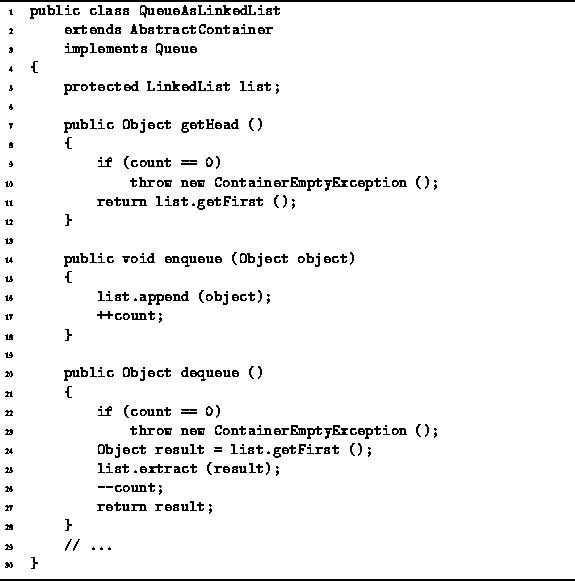

Data Structures and Algorithms
with Object-Oriented Design Patterns in Java
Data Structures and Algorithms
with Object-Oriented Design Patterns in Java
The getHead, enqueue, and dequeue
methods of the QueueAsLinkedList class are
given in Program  .
.

Program: QueueAsLinkedList class enqueue, getHead and dequeue methods.
The getHead method returns the object at the head of the queue.
The head of the queue is in the first element of the linked list.
In Chapter we saw that the running time of
LinkedList.First is a constant,
Therefore, the normal running time for the getHead method is O(1).
The enqueue method takes a single argument--the object to be added to the tail of the queue. The method simply calls the LinkedList.append method. Since the running time for append is O(1), the running time of enqueue is also O(1).
The dequeue method removes an object from the head
of the queue and returns that object.
First, it verifies that the queue is not empty
and throws an exception when it is.
If the queue is not empty,
dequeue saves the first item in the linked list
in the local variable result.
Then that item is extracted from the list.
Using the LinkedList class from Chapter ,
the time required to extract the first item from a list
is O(1) regardless of the number of items in the list.
As a result,
the running time of dequeue is also O(1).
 Copyright © 1998 by Bruno R. Preiss, P.Eng. All rights reserved.
Copyright © 1998 by Bruno R. Preiss, P.Eng. All rights reserved.